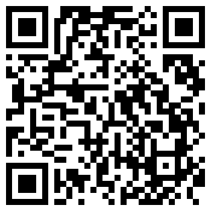

Pass the Glass
Nederlands
Pass the Glass
Nederlands
Your wine box in Pass the Glass
Do you sell wine boxes to taste at home? With a QR code on the card in the box, every wine is ready for a tasting with friends, with its name, vintage, price and a photo of the label.
You send us what's in the box, we take care of the tech.
How it works for your customer
- Scan. Your customer scans the QR code on the card with the camera. On iPhone or iPad, that opens the free Pass the Glass app with the tasting ready. With another phone, your customer tastes in the browser, with nothing to install.
- Taste. The wines are ready and the tasting has your box's name. Add the tasters, blind or not, and pass the phone around.
- Reveal. A drum roll for each wine, and at the end the winner and the Best Value. They share the results as a picture in the group chat.
The app is free for your customer. The results stay on their phone or iPad: the app sends nothing back and nothing is tracked. Want to know which wine won? Ask on the card, for example by WhatsApp or email.

Try it yourself
Scan this QR code with your phone's camera, or in Pass the Glass under New Tasting › Scan Wine Box. You'll get an example box with four made-up wines.
What we do for you
- You send us what's in the box. You get a form from us for the wines, vintages and prices, and if you like, photos of the labels and a food pairing tip.
- We take care of the tech. We put the box online at a fixed address and test it in the app and in the browser.
- You get the QR code, to put in the box or on your website, with a short text for the card.
- Changes are always possible. A typo, or a different wine in the box? We update it, and the QR code keeps working.
Want to know more?
Everything in one place, to keep or pass on: download the brochure (PDF, in Dutch).
What it costs
That depends on how many boxes you make and how often they change. Email us what you have in mind, and we'll make a proposal that fits your shop.
Would you rather put the box on your own website? That's possible too, just email us.